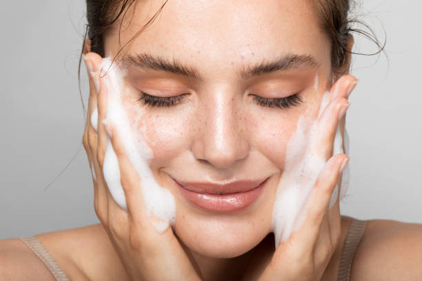

Tu piel es importante
La piel es el órgano más extenso del cuerpo, nos protege y nos ayuda a mantener la temperatura adecuada. El mundo rápido en el que vivimos, la alimentación, la contaminación, el sol, estrés y una larga lista de etcéteras influyen bastante en la calidad de nuestra piel. Pero antes de preocuparse, lo importante es ocuparse. Si nunca antes has realizado una rutina de skincare ¡no te agobies! Con los pasos adecuados estarás entregando un poquito de amor y cuidado a tu rostro. Lo que debes aplicar
Tener siempre presente
La piel es muy vulnerable a la exposición del sol y el calor, esto sumado a la humedad de la transpiración en verano puede provocar irritaciones e infecciones. Una piel sin proteger puede provocar que se vuelva seca y poco elástica al corto plazo, así como aumentar el riesgo de desarrollar cáncer de piel, envejecimiento prematuro y desarrollo de arrugar al mediano plazo.